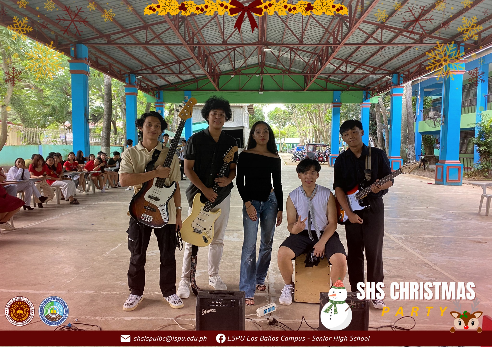

Activities
A sneak peek of what we do :>


Unlock your future with LSPU - LB Senior High School academic tracks ICT, HUMSS, and ABM
— master technology, shape society, and lead in business!
What makes SHS fun!
You get to choose a track (ICT, HUMSS, ABM, etc.) that matches your passion and future career goals, making learning more engaging and relevant.
Senior High School brings opportunities to meet new people, join clubs, attend school events, and create unforgettable memories.
Whether it’s college, a career, or starting a business, SHS equips you with the skills and confidence to take on the real world.
Learn more about what the different strands can offer
In Senior High School (SHS), the Information and Communications Technology (ICT) strand under the Technical-Vocational-Livelihood (TVL) track prepares students for careers in the ever-evolving world of technology. This strand focuses on essential digital skills, including computer programming, web development, networking, and multimedia design. Students gain hands-on experience in *coding, computer hardware servicing, and database management, equipping them with the technical expertise needed in the IT industry. The ICT strand also enhances creativity through graphic design, video editing, and animation, making it an ideal choice for students passionate about technology and digital innovation. By the end of the program, graduates are prepared for further studies in computer science, information technology, and related fields or can pursue technical careers in IT support, web development, and software engineering.
In Senior High School (SHS), the Humanities and Social Sciences (HUMSS) strand is designed for students who are passionate about understanding society, culture, and human behavior. This strand focuses on developing strong communication, critical thinking, and analytical skills, preparing students for careers in fields such as journalism, education, psychology, political science, and social work. HUMSS students engage in subjects like creative writing, philosophy, social sciences, and public speaking, which help them express ideas effectively and analyze social issues deeply. The strand encourages leadership, advocacy, and research, making it ideal for those who aspire to make a difference in society. Graduates can pursue higher education in law, communication, public administration, and other humanities-related courses, equipping them with the knowledge and skills needed for impactful careers.
In Senior High School (SHS), the Accountancy, Business, and Management (ABM) strand is designed for students interested in entrepreneurship, finance, and corporate management. This strand focuses on business principles, financial management, marketing strategies, and economics, equipping students with the skills needed to run and manage businesses effectively. ABM students engage in subjects like business mathematics, accounting, entrepreneurship, and business ethics, helping them develop analytical thinking, leadership, and decision-making abilities. The strand prepares students for careers in business administration, marketing, accounting, and finance, as well as for starting their own businesses. Graduates can pursue further studies in commerce, economics, management, and related fields, giving them a strong foundation for success in the corporate and entrepreneurial world.
A sneak peek of what we do :>